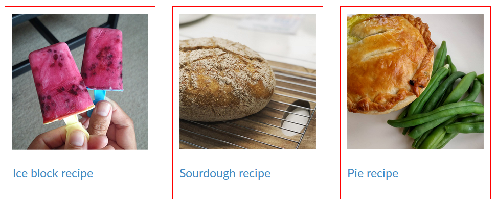
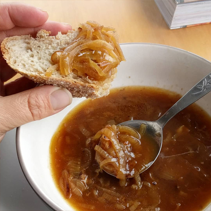

HTML/CSS Introduction
Housekeeping
- Emergency
- Bathrooms
- Breaks
- Leave by a certain time?
Hello!
A bit about me
You?
Experience
- Who has done some HTML before?
- CSS?
- No experience needed!
Overview
- HTML
How markup works, basic elements, links, images, lists - CSS
Anatomy of a CSS rule, specificity, box model Types of styling we can apply, display. Positioning (time dependent) Workflow and debugging - Build a basic web page
Tools
- Ubuntu
- Folders & files
- Atom (text editor)
- Browser (Firefox, Chrome)
- Online resources
Questions
Please ask!
Getting started — part 1
- Create a folder on your desktop, and name it 'project'. We will keep today’s work here.
- Open Atom, and close all of the tabs in it.
- Create a new file and add some text.
- Save your file. Name it index.html, and make sure it’s in the folder we just created.
Getting started — part 2
- In Atom, you should see a sidebar on the left which contains your project file and folder.
If not, navigate to File > Add Project Folder - Reduce the size of your Atom window, so it takes up half of your screen (ctrl + windows key + right arrow).
- Open index.html with Firefox. Make it fit the other half of your screen.
Getting started — part 3
- Alter the text in your code editor and save.
- Navigate to your browser and reload the page (F5 key, or click the refesh icon).
Pro tip:
In the Atom menu, navigate to View and
select Toggle Soft Wrap
⚠ Workflow only! ⚠
Currently, the browser doesn’t know how to read our content.
But soon, we will use HTML to apply meaning to our content.
Once we’ve got our HTML sorted, we will use CSS to describe the presentation of our content.
Our set up
Is not crucial, but the half & half view is a good way to get started.
Slides
HTML:Hypertext Markup Language
The most basic building block of the web.
It defines the meaning and structure of web content.
filename.html
Hypertext
Links that connect web pages to one another
Within a single website, or between websitesMarkup Language
We use markup to annotate text, images, and other content for display in a web browser.
This markup determines how the computer (and other users!) interpret your content.
Semantic: relating to meaning in language or logic.
Example:
Imagine you are a computer.
You are supposed to use the following sentence on a webpage:
This is a very dangerous liquid.
How does the computer know to give ‘very dangerous’ strong importance?
We have to tell it — mark it up!
This is a [start strong importance]very dangerous[end here please] liquid.
This is where the language bit comes in:
This is a <strong>very dangerous</strong> liquid.
gives us:
This is a very dangerous liquid.
Getting started, again!
<!DOCTYPE html>
<html lang="en">
<head>
<meta charset="utf-8">
<title>Browser tab</title>
</head>
<body>
A web page by [your name]
</body>
</html>
Copy this code into your file.
What is happening here?
- <!DOCTYPE html>
- <html>…</html>
- <head>…</head>
- <body>…</body>
- <!-- comment --> (HTML)
- Indentation — reset <head> & <body>
We’re not online
Local files
Conventions, hints, tips, etc.
- Lower case — file names, markup
- Indentation — tabs, spaces
- Tab complete — yay!
- The docs — these are your friends
Any others?
Exercise:
Start building a web page!
Learn a bit, then build a bit.
Create an online recipe book
- Home page
- Link to a recipe page
HTML elements:
Head
Contains machine-readable information (metadata) about the document.
Not to be confused with <header> or <heading>.
Exercise: Head/title
- Take a look your browser, and the text in the tab at the top.
- In your code, within the <head> of your document, you’ll see some tags like this: <title> </title>
- Change the text between these tags. (Suggestion: My online recipe book).
- Look your browser tab again
After this, we will mostly be working within the <body> tags.
HTML elements:
Text
- Headings — <h1>, <h2>, <h3>, <h4>, <h5>, <h6>
- Paragraph — <p>
- Semantics — <strong>, <em> (different to <b>, <i>)
- Line break — <br> (self-closing)
- Span — <span> (non-semantic)
HTML:
The make up of an element
Note: self-closing tag. More to come on this.
Exercise: Text
My online recipe book
A collection of recipes I've collected over the years.
Recipes:
Guacamole recipe
A web page by [your name]
- Copy the text above, paste it into the <body> of your project
- Save your work, and take a look in your browser
- Go back to your code, and mark up the text
Hint: two headings, and three paragraphs - Look again!
By default, the browser gives us some sensibile styling
HTML elements:
Images
<img src="cute-cat.png" alt="cute cat plays in grass" />
Self-closing tag!
- Formats / .jpeg (.jpg) / .png / .gif / .svg
- Prepare image with design software
- Change size/presentation with CSS
Exercise: Images

- Within your 'project' folder, create a folder called 'images'
- Copy the image above, and save it into your images folder
- Add the image to your code. Put it before the <h1>
HTML elements:
Parts of a web page
- <header>
- <nav>
- <main> (IE11+)
- <section>, <aside>
- <footer>
- <div> (non-semantic)

Exercise: Parts of a web page
- Add a <header> element — tags around the logo
- Add a <footer> element — tags around 'A web page by…'
- Add a <main> element — tags around the rest of the content
<header>
…
</header>
<main>
…
</main>
<footer>
…
</footer>
Debugging & inspecting
Modern browsers give us great tools for checking how our code is being interpreted.
Right click on any element, choose 'inspect element' option, or press F12 to bring up the developer tools.
Chrome, Firefox, IE (Edge)
HTML elements:
Links
<a href="[path-to-file]">Link text</a>
<a href="team.html">Our team</a>
What does href mean? It comes from Hyperlink REFerence
HTML elements:
Links
In a sentence:
<p>Learn more about <a href="team.html">our team</a></p>
Exercise: Links
Make the logo a link to the page we are on (index.html)
Try in your browser: hover over the image.
The cursor should change, and the href (url) shows at the bottom of your browser.
Make the text 'Guacamole recipe' a link to guacamole.html
Note: Keep saving your work, and reloading your browser.
Exercise: A new page!
- Ensure your file index.html is saved
- Go to File > Save as, and name your file guacamole.html (make sure it's at the same level as index.html in the folder structure — a sibling!)
- Update the title (browser tab)
- Update the <h1> to say Guacamole
- Remove everything else inside the <main> tags
- Have a click around!
HTML elements: Links continued
Email link
<a href="mailto:toni@catalyst.net.nz">email Toni</a>
External site
<a href="https://www.wikipedia.org">Wikipedia website</a>
<a href="https://www.wikipedia.org"
target="_blank" rel="noopener noreferrer">Wikipedia website</a>
Note: target="_blank" opens the link in a new tab.
Adding rel="noopener noreferrer" protects your users against having the site you’ve linked to potentially hijacking the browser (via rogue JavaScript).
HTML elements:
Ordered list
- First place
- Second place
- Third place
- First place
- Second place
- Third place
HTML elements:
Unordered list
- Oranges
- Lemons
- Plums
- Oranges
- Lemons
- Plums
Exercise: Overview
Whiteboard wireframe
Exercise: Lists, HTML overview
Copy the text below, and paste it under your Guacamole heading
Guacamole is an avocado-based dip, spread, or salad first developed by the Aztecs in what is now Mexico. In addition to its use in modern Mexican cuisine, it has become part of international cuisine as a dip, condiment and salad ingredient.
Recipe
Quick and easy, this guacamole takes only 10 minutes to prepare.
Ingredients
2 cloves garlic, peeled
1 teaspoon kosher or sea salt
3 ripe avocados
Juice of 1 small lime
½ a small red onion, peeled and finely diced
1 bunch coriander, chopped
1 small chili, chopped
Optional: pinch of cumin
Optional: 1 teaspoon olive oil
Optional: a dash of chipotle or ancho chile powder
Method
Mash the garlic and salt together in a mortar and pestle.
Split the avocados in half and remove the pits. Scoop out the pulp and dice.
Add the avocado to the garlic mixture, along with the lime, and mash to your liking – some like it chunky, some prefer it smooth.
Mix in the onions, coriander, fresh chili, cumin (optional), and olive oil (optional).
Taste and season with more salt, lime juice, and chili if desired. For a slightly smokey flavour, add a bit of chipotle or ancho chile powder.
Notes
If you don't have a mortar and pestle, you can also make guacamole in a bowl using a fork or potato masher. If so, chop the garlic first.
Use the mark up we’ve looked at today to assign meaning to our additional content.
Exercise: Checklist & extra
- Add a guacamole image.
- Is there anywhere you can add emphasis tags?
- Add external links to wikipedia for kosher salt and mortar and pestle.
- Have a browse at the Mozilla HTML element documentation

Cascading Style Sheets (CSS)
A language used for describing the presentation of a document written in a markup language.
filename.css
CSS
We’re using it to Style the page
It’s separate from the HTML (is its own Sheet)
It’s Cascading*
*We’ll get to this part soon
HTML
Content
CSS
Presentation
Working with HTML
HTML
<p>Text</p>
<footer>
<p>Text</p>
</footer>
CSS
p { ... }
footer { ... }
A simple CSS rule
p {
color: green;
font-weight: bold;
}
A simple CSS rule
p { /* selector */
color: green; /* rule */
font-weight: bold; /* rule */
}
Exercise: Create style sheet
- Within your 'project' folder, create a new folder called 'css'
- In Atom, create a new file and name it styles.css
- Save it inside the css folder.
- Add a CSS rule:
body {
background-color: yellow;
}
It’s not working!
Exercise: Connect a style sheet
In the <head> (metadata) section of your HTML document:
Note: not in the <header>!
Make sure to add it to both of your html files
What can we do with CSS?
All sorts! Here are a few things we can adjust:
- Borders
- Padding
- Margins
- Widths
- Rounded corners
- Opacity
- Font size, weight, color*
- Background color*
*color!
Exercise: Have a play
Colours/colors
- hex: #c0ffee
- name: orange
- rgba: rgba(190, 173, 237, 0.6)
- Google 'colour picker' for values
- Colour contrast checker tool: https://webaim.org/resources/contrastchecker/
Colour tools:
Exercise: Base styles
- body: remove margin, change font-family, change line-height. Remove background color
- <a>: Change color. Change the colour when hovered over.
- <header>: Set light background colour and give some padding
- <main>: Set left and right margins
- <footer>: Set dark background colour, apply padding, make sure you can read the text
Box model
Exercise: Box model
- In index.html, give the h2 a class of exercise
- Type the following into your stylesheet:
.exercise {
background-color: yellow;
padding: 30px 40px;
width: 200px;
height: 150px;
border: 5px solid blue;
margin: 30px;
box-sizing: border-box; /* see note* */
}
* Tells browser to account for any border and padding in the values you specify for an element's width and height. This typically makes it much easier to size elements.
Shorthand options
When declaring sizes, we can:
margin-top: 10px;
margin-right: 20px;
margin-bottom: 10px;
margin-left: 20px;
margin: 10px 20px 5px 15px; /* [top] [right] [bottom] [left] */
margin: 10px 20px 5px; /* [top] [right + left] [bottom] */
margin: 10px 20px; /* [top + bottom] [right + left] */
margin: 20px; /* [all values are the same] */
Inline, block and inline-block
Note: examples use the same HTML
Display: inline
Text without
a {
display: inline; /* note: default */
padding-bottom: 20px;
}
Text without a link
Display: block
a {
display: block; /* change */
padding-bottom: 20px;
}
Text without a link
Display: inline-block
a {
display: inline-block; /* change */
padding-bottom: 20px;
}
Text without a link
Exercise: Display
- In index.html, give the link a class of exercise
- Add a display property to make the link accept the vertical values
More CSS: Floats
We want to 'float' this image so the text reflows around it. We can float things either to the left or the right. We need to be careful though, floated elements don't sit in the page properly any more. Read about 'clearfix' to learn about this.
img { float: left; margin: 0 20px 10px 0; }
More CSS: Pseudo selectors
a:hover /* link is interacted with, but not clicked */
a:active /* link is being activated */
a:visited /* link has been visited */
p:first-child /* select the first paragraph (child) */
p:last-child /* select the last paragraph (child) */
More CSS: Positioning
static /* default */
relative
absolute
fixed
Let’s get more specific
There are different ways of referring to a specific element or elements on the page.
In the HTML, we give elements either a
class or an ID (or both!).
Paragraph which needs different styling
Paragraph which is standard
Paragraph which needs different styling
Paragraph which is standard
Now we can refer to the class name in the CSS
For a class, we use a period:
.intro {
font-size: 20px; /* note: default is 16px */
}
A class can be used more than once
Using a class
Paragraph which needs different styling
To refer to a class, we use a period:
.intro {
font-size: 20px;
}
A class can be used more than once
Using an ID
Elephants are big
To refer to an ID, we use a hash:
#elephant-info {
color: green;
}
An ID is unique — it can only be used once.
HTML
<p>Text</p>
<input id="vote">
<p class="time">Text</p>
<p class="time new">Text</p>
CSS
p { ... }
#vote { ... } /* unique */
.time { ... } /* resuable */
.time.new { ... }
Inheritance and specificity
The great thing about CSS is that we can stack the selectors.
Let’s say we have this HTML:
Blah blah first link blah
Blah second link blah
And we want to make only the second link green
Let’s make a rule for that…
.fact a { color: green; }
This will only affect 'a' tags that are contained within elements that have the 'fact' class.
What happens if we also have a rule to make all the links blue?
a { color: blue; }
Most specific wins
The most specific rule will always be applied where possible
But the ordering of CSS rules is important
If two (or more) rules are equally specific, the lowest (bottommost) rule wins
Note:
- Class selectors
are more specific than element selectors - ID selectors
are more specific than class selectors
Exercise
- Remove 'exercise' class from your HTML
- Add guacamole image above the guacamole link
- Add add two more items: sourdough and pie (image and link)
Note: the new links won’t go anywhere, but you can add these in later
<div> & stacking CSS selectors
- Add a <div> around each item set
- Give the div a class of 'recipe', and use CSS to style it (as above)
- Add styles the content of the .recipe divs
The docs
Extra
- Add additional html pages and links
- Add a description list to a recipe page (Serves, Cook time, etc.)
- Try CSS float, position, and pseudo selectors
- Have a play on CSS Diner

Going forward
- Practise
- Content comes first
- Use docs
- Use browser developer tools (F12)
Resources
- HTML elements
https://developer.mozilla.org/en-US/docs/Web/HTML/Element - CSS syntax/properties/selectors
https://developer.mozilla.org/en-US/docs/web/CSS/Reference - Browser support
http://caniuse.com/ - Colour contrast checker
https://webaim.org/resources/contrastchecker/